ระบบควบคุมระดับน้ำ
ด้วย PI
พัฒนาตาม V-Model · ใช้ภาพและผลจากชุดทดลองจริง
หัวข้อนำเสนอ
สีฟ้าแทนงานแบบจำลองและผลจำลอง สีส้มแทนฮาร์ดแวร์และถังจริง ใช้หลักเดียวกันทั้งเว็บ
โจทย์: ควบคุมระดับน้ำ h ให้เท่ากับ SP ในช่วง 100–300 mm
เลือก SP ทีละ 25 mm
กด SP+ / SP− แล้วกด Start เพื่อยืนยัน SP
ปั๊มเติมน้ำได้ทิศทางเดียว
เมื่อ SP ลดลงและ PI ≤ 0 คำสั่ง PWM = 0 → ระดับเริ่มลดลงจากน้ำไหลออกทางท่อ ID 4 mm เมื่อระดับเข้าใกล้ SP ใหม่ PI กลับมาสั่งปั๊มอีกครั้ง
Actuator เติมน้ำได้ทางเดียว → ผลตอบสนองขาเพิ่มระดับกับขาลดระดับไม่สมมาตร
ประมวลผลบน Arduino Mega
PC เชื่อมต่อผ่าน External Mode เพื่อแสดงผลและบันทึกข้อมูลเท่านั้น
d = ระยะที่เซนเซอร์วัดจากใต้ฝาถึงผิวน้ำ · h = ระดับน้ำจากก้นถัง (ได้จาก d ผ่าน Lookup)
ข้อกำหนดเชิงตัวเลข R1–R8 และนิยามที่ใช้ตัดสิน
| ID | ข้อกำหนด | เกณฑ์ | วิธีทดสอบ |
|---|---|---|---|
| R1 | ช่วง Setpoint | 100–300 mm ทีละ 25 mm | MIL · ถังจริง |
| R2 | Overshoot / Undershoot | ≤ 10% ของ SP ปลายทาง | MIL · ถังจริง |
| R3 | Settling time (ts) | ในแถบ ±5% | MIL · ถังจริง |
| R4 | Steady-state error (ess) | ≤ 5% ของ SP ปลายทาง | MIL · ถังจริง (สเกล) |
| R5 | ผลของโค้ดตรงกับโมเดล | SIL ≤ 1×10−6 · PIL ≤ 0.5 count PIL: เสนอหลังได้ผล | SIL · PIL |
| R6 | Execution time | ControlCore < Sample time 200 ms | PIL |
| R7 | Safety interlock | PWM = 0 เมื่อ Sensor fault หรือระดับก่อน Filter ≥ 310 mm | ถังจริง · Standalone |
| R8 | Standalone | ทำงานได้โดยไม่เชื่อมต่อ PC | Standalone |
นิยามที่ใช้ตัดสิน
- Overshoot
Undershoot
โดย SP = SP ปลายทาง - PV = ค่าเซนเซอร์หลัง Filter · ค่าสเกลรายงานแยก
- ts: แถบ ±5% ของ SP ปลายทาง เริ่มนับเมื่อ Apply SP ใหม่
- ess ถังจริง = ค่าที่อ่านจากสเกลช่วงท้ายของแต่ละระดับ − SP (ไม่ได้จับเวลาคู่กับ PV)
เกณฑ์ ts เดิมกำหนด 200 s และปรับเป็น 250 s หลังทดสอบถังจริง (ดูหัวข้อสรุป) · PIL tolerance 0.5 count เสนอหลังได้ผลทดสอบ
V-Model: แต่ละขั้นออกแบบทวนสอบด้วยอะไร
← เลื่อนแผนภาพไปทางขวาเพื่อดูครบ →
ฮาร์ดแวร์และชุดทดลอง

| ส่วนประกอบ | รายละเอียด |
|---|---|
| ถังทดสอบ | Acrylic 100×100×500 mm · เซนเซอร์ VL53L0X อยู่ใต้ฝา |
| สเกลอ้างอิง | ติดข้างถัง อ่านด้วยสายตา · ใช้รายงาน ess |
| วาล์ว / ทางน้ำออก | ท่อออก ID 4 mm กลับลงถังพัก |
| ถังพัก | 10 L · ปั๊ม AW500S 12 V จุ่มอยู่ภายใน |
| กล่องควบคุม + LCD | Mega 2560 · IRF520 (PWM ขา D5) · LCD2004 I²C · SP+ / SP− / Start |
| แหล่งจ่ายไฟ | 12 V ปั๊ม · DC-DC 7 V → VIN |
อ้างอิงวงจร Water_Level_Schematic_R03
กล่องควบคุม: Microcontroller, Driver, LCD และปุ่มกด


| ขา | ต่อกับ |
|---|---|
| D5 | PWM → SIG ของ IRF520 |
| D20 | SDA (บัส I²C) |
| D21 | SCL (บัส I²C) |
| D22 | ปุ่ม SP+ |
| D23 | ปุ่ม SP− |
| D24 | ปุ่ม Start |
| VIN | DC-DC 7 V ผ่าน 1N4007 |
| 5 V | VCC เซนเซอร์ · IRF520 |
| GND | Common ground ทั้งระบบ |
เซนเซอร์วัดระดับ ปั๊ม และทางน้ำออก


ระยะ d ≠ ระดับ h — เซนเซอร์วัดระยะ d จากฝาลงผิวน้ำ แล้วแปลงเป็นระดับ hm ด้วย Lookup Table ก่อนเข้า Filter · พารามิเตอร์ที่ Fit ได้แทนพฤติกรรมรวมของปั๊ม ท่อ วาล์ว และทางระบายทั้งชุด
Single-loop feedback: PV ป้อนกลับเข้าจุดรวมก่อน PI
← เลื่อนแผนภาพไปทางขวาเพื่อดูครบ →
e หน่วย mm · k = ลำดับ Sample · h = ระดับจริง (วัดตรงไม่ได้) · hm = ระดับหลัง Lookup
Single loop ไม่ใช่ Cascade · ALLOW = 0 เมื่อ 0 < d ≤ 500 mm ไม่เป็นจริง หรือ hm ≥ 310 mm
แบบจำลองและพารามิเตอร์
การทดลองอ้างอิง LAB1–LAB5: แต่ละครั้งใช้ทำอะไร
LAB1 Step
PI: ไม่ระบุในต้นฉบับ
วงปิดครั้งแรก · ระดับสูงสุด ≈ 330 mm
ใช้เป็น: Cross-validation ของแบบจำลองเท่านั้น · RMSE 11.04 mm
LAB2 Step
PI 1.24 / 0.0207
SP 0→200→150→125→200 mm · 1,802 samples (Ts 0.2 s)
ใช้เป็น: ข้อมูล Fit พารามิเตอร์ Plant (lsqnonlin)
LAB3 Step
PI 1.24 / 0.0207
Peak 210.659 mm (125→200) · ต่ำสุด 119.167 mm (150→125)
ใช้เป็น: โจทย์ลด Overshoot · Real–Sim RMSE 2.530 mm
LAB4 Step
PI 0.90 / 0.011
Peak 200.894 mm · ts ช่วงเติมครั้งแรก 182.0 s
ใช้เป็น: ทวนสอบผล Grid search · Real–Sim RMSE 2.175 mm
LAB5 Ramp ขาลง
PI 0.90 / 0.011
จำกัดการลด SP −0.5 mm/s · ต่ำสุด 147.184 mm (SP 150) · 124.376 mm (SP 125)
ใช้เป็น: ทดสอบรูปแบบ SP ขาลง · Real–Sim RMSE 1.868 mm
การทดสอบถังจริงรุ่นล่าสุด (เวอร์ชัน 1.48, Run14–17) ใช้ SP แบบ Step ไม่ใช่ Ramp แบบ LAB5
สมการพลศาสตร์ของถังน้ำ พารามิเตอร์ และหน่วย
Mass balance · ปริมาตรสะสม = ปริมาตรเข้า − ปริมาตรออก
Motor lag ในโดเมน s (เทียบเท่าบรรทัดสุดท้าย)
mm · mm³/s · PWM count · s · Steady state เมื่อ
| ค่า | ความหมาย | หน่วย | ที่มา |
|---|---|---|---|
| A | พื้นที่หน้าตัดถัง | mm² | วัดภายใน 100×100 mm → 10,000 |
| Co | สัมประสิทธิ์การระบาย | mm5/2/s | Drain test → Fit |
| Ku | อัตราไหลต่อ PWM count | mm³/(s·count) | Fill test → Fit |
| Kh | ผลของระดับต่อ Qin | mm²/s | Steady state → Fit |
| Q0 | Flow offset | mm³/s | Fit |
| τm | Motor time constant | s | สมมติฐาน 1.25 s (ตรึงค่า) |
| Ts, Filter | Sample time · 0.2/0.8 | s · – | ค่าตั้งของระบบ |
ค่าประมาณแรกของ Co, Ku และ Kh
Co จาก Drain test
PWM 0 (หยุดปั๊ม) · ระดับ 200 → 100 mm · Δt 70 s
เมื่อ แล้ว Integrate จาก ถึง
Ku จาก Fill test
PWM คงที่ 100 count (ไม่ใช่ 100% duty) · ระดับ 0 → 129 mm · Δt 25 s
ประมาณ จากระดับเฉลี่ย และ
โมเดลปั๊มตั้งต้น Qin ≈ Ku·u ยังไม่มี Kh และ Q0 ของสมการเต็ม และละ Motor lag ในการประมาณขั้นนี้
Kh จากจุดสมดุล (สมมติ Q0 = 0)
uss 55 count · hss 200 mm
ที่ Steady state: และสมมติ ในขั้นนี้
ค่าที่ใช้แทน: Ku = 549.06 และ Co = 1,052.77 ซึ่งต้นฉบับระบุว่าเป็น Initial estimate จากการทดลองต่างช่วง · ระดับน้ำเพิ่ม 1 mm → อัตราไหลของปั๊มลดลง Kh mm³/s
| ค่า | รุ่น / ที่มา | ค่า |
|---|---|---|
| Co ที่ปรากฏในงานนี้ (คนละรุ่น) · mm5/2/s | ||
| Co | Drain test · ใช้หา Ku | 1,183.47 |
| Co | Initial estimate ที่ใช้หา Kh และ SIMC | 1,052.77 |
| Co | หลัง Fit ด้วย LAB2 | 1,348.08 |
| Ku ที่ปรากฏในงานนี้ (คนละรุ่น) · mm³/(s·count) | ||
| Ku | Fill test | 611.04 |
| Ku | ใช้หา Kh | 549.06 |
| Ku | Initial estimate ใน SIMC / ตาราง Fit | 536.36 |
| Ku | หลัง Fit LAB2 (มี Kh, Q0) | 941.22 |
ประมาณพารามิเตอร์ร่วมด้วย lsqnonlin บนข้อมูล LAB2
ตรึงค่า: A = 10,000 mm² · τm = 1.25 s · τs = 3.9 s
ค้นหา: 5 โครงสร้างแบบจำลอง × 3 Initial guess · มี Parameter bounds
hinit = ระดับเริ่มต้นของข้อมูล (คนละตัวกับ h0 = 200 mm ของ SIMC)
ข้อมูล: ใช้ LAB2 ช่วง 20–360.2 s ที่ Ts 0.2 s
ผลก่อน–หลังปรับแบบจำลอง: แยกการประเมิน 3 แบบ
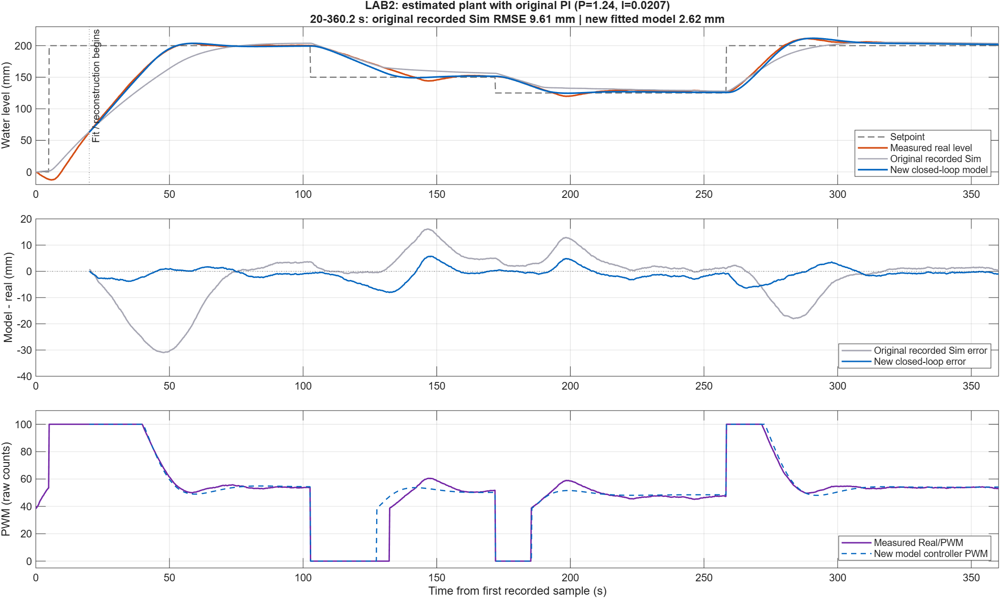
| ค่า | Initial | หลัง Fit | หน่วย |
|---|---|---|---|
| Ku | 536.36 | 941.22 | mm³/(s·count) |
| Kh | 76.55 | 18.935 | mm²/s |
| Co | 1,052.77 | 1,348.08 | mm5/2/s |
| Q0 | — | 28,265.07 | mm³/s |
ออกแบบและจูน PI
PI ตั้งต้นด้วยกฎ SIMC บนแบบจำลองลดรูป
1 · แบบจำลองลดรูปรอบ h0 = 200 mm
ใช้
2 · กฎ SIMC (θ = 0, τc = λ = 15 s)
ค่าที่ใช้ทดลอง LAB2–LAB3
สมมติฐาน / พจน์ที่ละไว้
- ละ : ในสมการเต็มช่วง ผลของระดับมีทั้ง และ — แบบจำลองตั้งต้นใช้เฉพาะพจน์หลัง
- ละ Q0, Motor lag τm และ Filter ของ PV
- Dead time θ = 0
- ไม่รวม Saturation และปั๊มทางเดียว
อ้างอิง: Skogestad (2003) SIMC tuning rules · เป็นจุดเริ่มต้นการออกแบบ ทวนสอบกับระบบจริงใน LAB3 แล้วจึงจูนใหม่
ปรับจูน PI ด้วย Grid search บนแบบจำลอง แล้วทดลองจริง
เลือกจาก Grid search บนแบบจำลองที่ Fit แล้ว · Ts 0.2 s · Forward Euler
Error เป็น mm และเอาต์พุตเป็น PWM count
ค้นหาใน Simulation ผลจำลอง
- Coarse grid 570 ชุด → Fine grid 875 คู่ (Python/NumPy บนแบบจำลองที่ Fit แล้ว)
- เกณฑ์ค้นหา: Overshoot ≤ 2 mm · ts ≤ 180 s · Tail MAE ≤ 1 mm
- Cost
- Sensitivity เพิ่มเติม 9 กรณี
เกณฑ์ค้นหานี้ใช้คัดเลือกใน Simulation — ไม่ใช่เกณฑ์ตัดสิน R2–R4
ผลจริง LAB3 → LAB4 ถังจริง
| ตัวชี้วัด | LAB3 1.24/0.0207 | LAB4 0.90/0.011 |
|---|---|---|
| Peak ช่วงเข้า SP 200 | 210.659 mm | 200.894 mm |
| ts ช่วงเติมครั้งแรก | 56.6 s | 182.0 s |
Trade-off ที่สังเกตได้: Peak ลดลง แต่ ts ช่วงเติมครั้งแรกนานขึ้น
คนละ Run และคนละลำดับ SP — ไม่ใช่คู่ทดสอบเดียวกัน
ขีดจำกัดเอาต์พุตบนฮาร์ดแวร์
PI out 0–61.5 · clamping
PWM PI > 0: PI + 38.5 (≤ 100)
PI ≤ 0: 0 → ปั๊มหยุดสั่ง
61.5 + 38.5 = 100 count → Anti-windup ใช้ขีดจำกัดเดียวกับ Actuator
ผลทดสอบตาม V-Model
MIL, SIL และ PIL เป็นผลจากการจำลองหรือการรันโค้ดกับ input สังเคราะห์ แยกจากการทดลองกับถังน้ำจริงในหัวข้อถัดไป
MIL: ผ่านเกณฑ์ครบ 18/18 กรณี ผลจำลอง
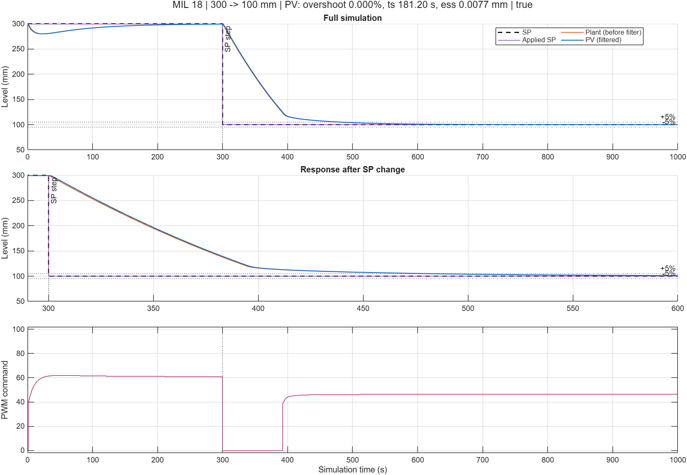
Step ขึ้น 8 กรณี: ts ≤ 15.2 s · Step ลง 8 กรณี: ts ≤ 15.6 s · เต็มช่วง 100→300: ts 54.0 s · รุ่นโมเดล: Plant จาก Fit LAB2 · PI 0.90/0.011 เดียวกับบนบอร์ด · SP ขาลงแบบ Step · Filter 0.2/0.8 ตรงกับฮาร์ดแวร์เวอร์ชัน 1.48 · รันใหม่ 30 ต.ค. · แบบจำลองแม่นที่สุดช่วง 125–200 mm จึงไม่แทนผลถังจริงที่ 100 mm
SIL: ผลตรงกันทุก Sample ในชุดทดสอบ ผลจำลอง · โค้ดบน PC
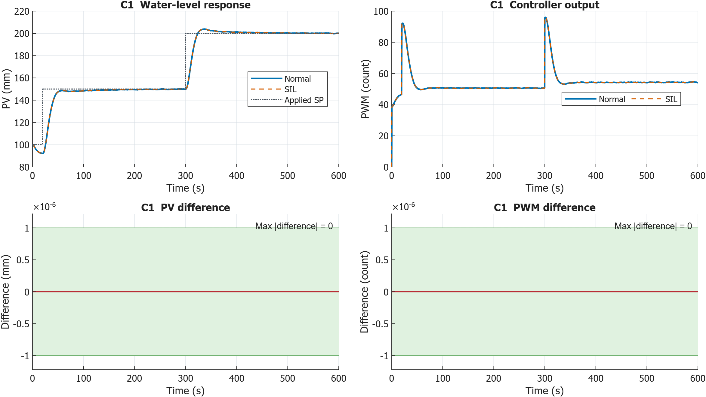
PIL: ControlCore บน Mega ใช้เวลาสูงสุดที่วัดได้ 124 µs รันบน Mega / Synthetic input
| กรณี | รายการทดสอบ | N | Max|ΔPWM| (count) | Exec. time สูงสุด |
|---|---|---|---|---|
| PIL-R1 | Error เป็นศูนย์ บวก และลบ | 451 | 3.66×10−6 | 124 µs |
| PIL-R2 | PWM saturation และ recovery | 601 | 0 | 112 µs |
| PIL-R3 | Stop/restart ด้วย ALLOW | 401 | 2.38×10−5 | 124 µs |
| รวม | 1,453 |
PIL-R1…R3 = รหัสกรณีทดสอบ ไม่ใช่ Requirement R1–R3 · double บน ATmega2560 มีขนาด 32 บิตเท่ากับ float · 124 µs ยังไม่รวมเซนเซอร์ I²C, LCD, External Mode และ ISR อื่น
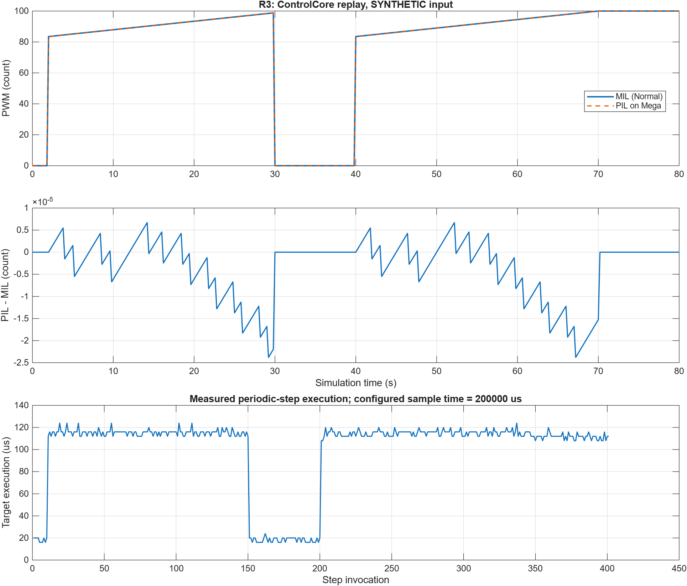
ถังจริง: Overshoot/Undershoot ≤ 10% ใน 18 การเปลี่ยน SP HIL ตามนิยามรายวิชา: ทดสอบกับถังจริง
Arduino Mega + VL53L0X + ปั๊ม + ถังจริง · คอมพิวเตอร์บันทึกข้อมูลผ่าน External Mode · ไม่มี Plant จำลองในวง · Run14/Run16, 30 ต.ค. · โมเดลเวอร์ชัน 1.48

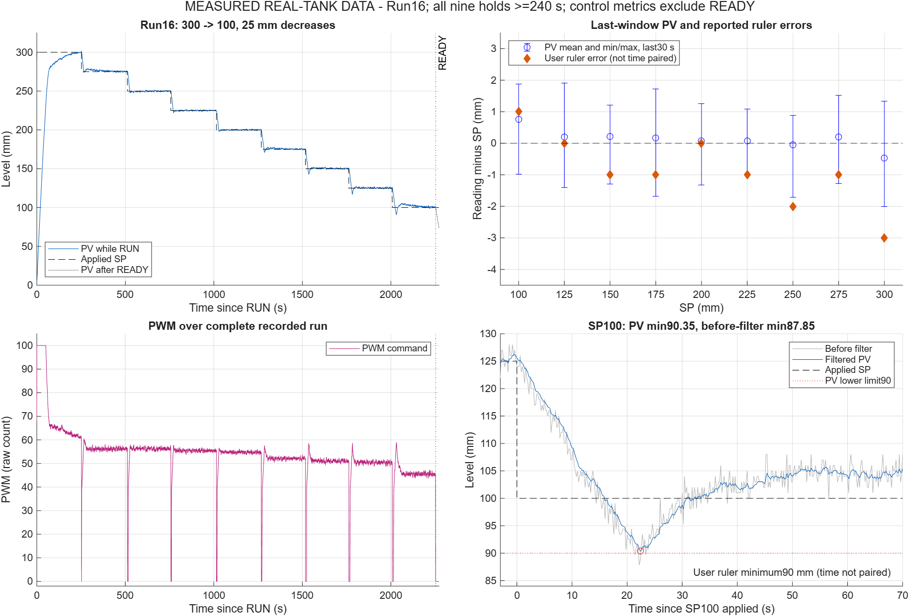
Run14 คงระดับ ≥ 240 s ได้ 8/9 ระดับ (SP 300 คง 232 s)
กรณีใกล้ขีดจำกัด: Step ลงสู่ 100 mm

| 125→100 | PV ต่ำสุด (หลัง Filter) | Undershoot จาก PV | สเกลต่ำสุด (ไม่ sync กับ PV) | Undershoot จากสเกล |
|---|---|---|---|---|
| ครั้งที่ 1 (Run16) | 90.35 mm | 9.65% | 90 mm | 10% |
| ทดสอบซ้ำ (Run17) | 92.94 mm | 7.06% | 92 mm | 8% |
ถังจริงเกิด Undershoot ที่ 100 mm แต่แบบจำลองไม่เกิด
| ตัวชี้วัด | MIL (จำลอง) | ถังจริง | แหล่งวัด / เงื่อนไข | เกณฑ์ |
|---|---|---|---|---|
| 125→100 Undershoot | 0% | 9.65% (Run16) · ซ้ำ 7.06% (Run17) | PV หลัง Filter · สเกล: 10% / 8% | ≤ 10% |
| 300→100 Settling time | 181.2 s | 223.6 s (Run17) | PV · แถบ ±5% · นับจาก Apply SP | ≤ 250 s (เดิม 200 s) |
| Step ขึ้น 25 mm: Overshoot สูงสุด | 0.48% | 1.72% หัวข้อถังจริงใช้ 2.40% | PV หลัง Filter | ≤ 10% |
| Steady-state error สูงสุด | 0.38 mm | 3 mm (สเกล) | MIL: PV จำลอง · ถังจริง: สเกล — ต่างแหล่งวัด | ≤ 5% |
ข้อสรุปที่รองรับด้วยหลักฐาน
ทั้งสองชุดผ่านเกณฑ์ (R3 ตามเกณฑ์ปรับปรุง) · ใช้ผลถังจริงในการตัดสิน
สาเหตุที่เป็นไปได้ (สมมติฐาน ยังไม่ได้ทดสอบ)
แบบจำลอง Fit ในช่วง 125–200 mm ไม่ครอบคลุม 100 mm และไม่ได้รวม Disturbance/Noise จากผิวน้ำ
ขอบเขตของ PIL และปัจจัยเพิ่มในระบบจริง 4 ด้าน
PIL: ControlCore บน Mega ด้วย Synthetic input → ผลต่าง PWM ≤ 2.38×10−5 count · ไม่มีเซนเซอร์ ปั๊ม และผิวน้ำในวง · ไม่เทียบ ΔPWM (count) กับความคลาดเคลื่อนระดับ (mm) โดยตรง
Resolution
ระยะจากเซนเซอร์ละเอียด 1 mm · PWM ปัดเป็นจำนวนเต็ม 1 count · ต้นฉบับระบุ 1 count ≈ 0.392% duty (= 1/255)
Accuracy
PV เป็นค่าเซนเซอร์หลัง Filter ไม่ใช่การวัดอิสระ · สเกลอ่านด้วยสายตา ไม่ sync กับ PV · ยังไม่มีการวัดอ้างอิงที่จับเวลาคู่กัน
Noise
SD ก่อน Filter 1.47–1.85 mm · SD หลัง Filter 0.38–0.81 mm · PV peak-to-peak ≈ 2.6–3.9 mm
150 จุดท้ายของ 18 ช่วง (Run14/16) · รวมความแปรปรวนผิวน้ำ
Delay
Ts 0.2 s · Filter group delay ≈ 0.8 s (95% ใน ≈ 2.8 s) → PV ตอบสนองช้ากว่าระดับจริง
PIL วัดเฉพาะเวลาคำนวณ 124 µs
LCD, Safety interlock และ Standalone
หลักฐานในหัวข้อนี้เป็นการแสดงสถานะบนจอ ภาพนิ่ง และวิดีโอสาธิต ยังไม่เพียงพอยืนยันว่าระบบทำงานโดยไม่พึ่งคอมพิวเตอร์ครบทุกเงื่อนไข (R8) และยังไม่มีบันทึกเอาต์พุต PWM/สถานะปั๊มขณะ Fault (R7)
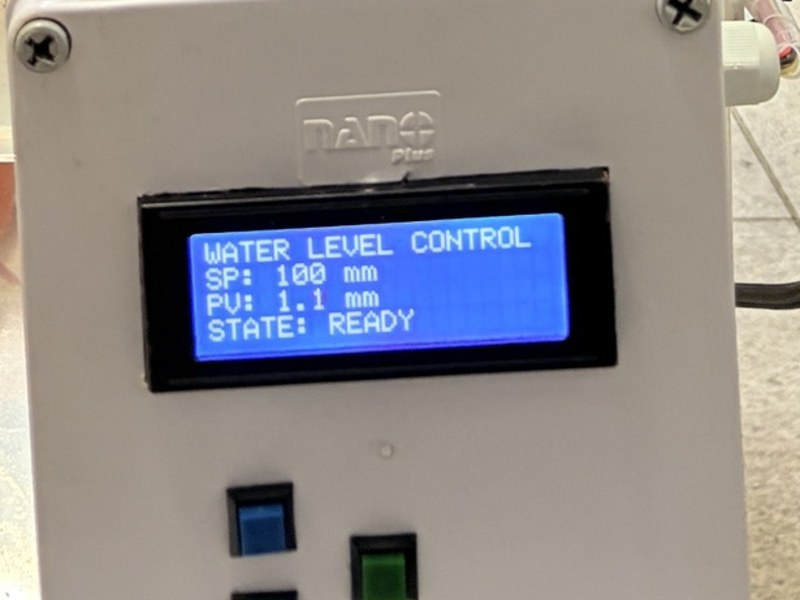
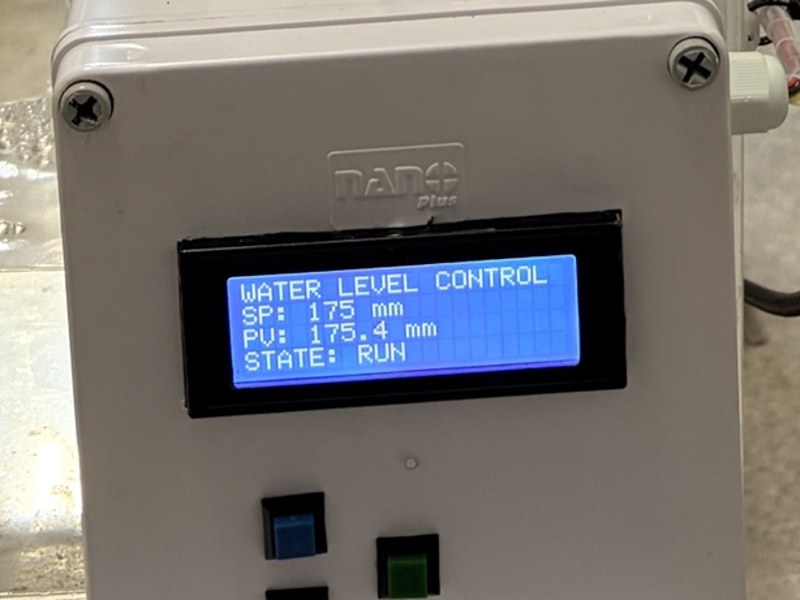

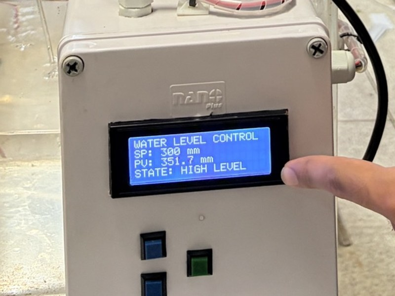
| สถานะ | เงื่อนไข (ในโมเดล) | PWM command |
|---|---|---|
| SENSOR FAULT | ระยะไม่อยู่ในช่วง 0 < d ≤ 500 mm | 0 · กลับสู่การควบคุมเมื่อค่าปกติ |
| HIGH LEVEL | ระดับก่อน Filter (hm) ≥ 310 mm | 0 · กลับเมื่อ < 310 mm |
มีหลักฐาน
- ภาพ LCD แสดง 4 สถานะ (สถานะบนจอ)
- Logic PWM = 0 ผ่าน ALLOW ในโมเดล
- Fault สร้างโดยยก/เอียงฝาเซนเซอร์
ยังขาด
- หลักฐาน PWM output และปั๊มหยุดจริงขณะ Fault
- หลักฐานการทำงานโดยไม่เชื่อมต่อ PC (R8)
วิดีโอสาธิตการทำงานจริง
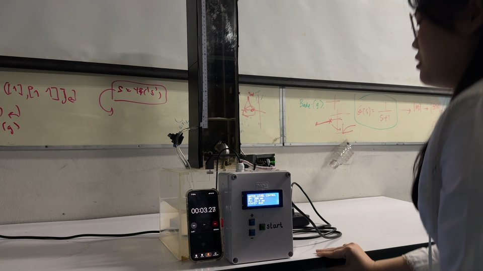
เครื่องเล่นไม่เล่นอัตโนมัติ และจะโหลดวิดีโอเมื่อกดเล่นเท่านั้น
สิ่งที่วิดีโอแสดง
- แนะนำโครงงานและชุดทดลอง พร้อมคำบรรยายภาษาไทยบนภาพ
- อธิบายเซนเซอร์ VL53L0X ภายในกล่องควบคุม และปั๊ม 12 V DC ในถังพัก
- อธิบายวงควบคุมแบบ Single loop และบทบาทของ PI
- สาธิตการเลือก SP และเริ่มควบคุม โดยมีนาฬิกาจับเวลาและจอ LCD ในภาพ
- สาธิตกรณีระดับน้ำเกิน 310 mm ที่จอแสดง HIGH LEVEL
คำบรรยายในวิดีโอบอกว่าปั๊มหยุดเมื่อเกิด HIGH LEVEL แต่ภาพไม่มีบันทึกเอาต์พุต PWM หรือการไหลประกอบ และวิดีโอไม่ได้แสดงชัดว่าตัดการเชื่อมต่อคอมพิวเตอร์ทั้งหมด จึงไม่ใช้เป็นหลักฐานยืนยัน R7/R8 ครบ
ข้อมูลประกอบ Standalone: เปรียบเทียบ PV กับสเกลจริง
| สถานะ | SP (mm) | PV บนจอ (mm) | สเกลจริงโดยประมาณ (mm) | PV − สเกล (mm) | สเกล − SP (mm) |
|---|---|---|---|---|---|
| ก่อนเริ่มควบคุม (ไม่ใช่ผลการควบคุม) | |||||
| READY | 100 | 1.1 | ≈ 0 | — | — |
| ขณะควบคุม (RUN) · ภาพนิ่งทีละระดับ | |||||
| RUN | 100 | 101.3 | ≈ 102 | ≈ −0.7 | ≈ +2 |
| RUN | 125 | 127.8 | ≈ 130 | ≈ −2.2 | ≈ +5 |
| RUN | 150 | 149.3 | ≈ 151 | ≈ −1.7 | ≈ +1 |
| RUN | 175 | 175.4 | ≈ 175 | ≈ +0.4 | ≈ 0 |
| RUN | 200 | 202.0 | ≈ 200 | ≈ +2.0 | ≈ 0 |
| RUN | 225 | 225.1 | ≈ 226 | ≈ −0.9 | ≈ +1 |
| RUN | 250 | 251.5 | ≈ 251 | ≈ +0.5 | ≈ +1 |
| RUN | 275 | 277.3 | ≈ 276 | ≈ +1.3 | ≈ +1 |
| RUN | 300 | 304.5 | ≈ 300 | ≈ +4.5 | ≈ 0 |
- PV − สเกล = ความต่างระหว่างค่าที่เซนเซอร์แสดงกับระดับที่อ่านจากไม้บรรทัด (ความแม่นของการวัด)
- สเกล − SP = ความต่างระหว่างระดับน้ำจริงกับเป้าหมาย ณ เวลาถ่ายภาพ (ผลการควบคุม ณ ขณะนั้น)
- ทั้งสองคอลัมน์คำนวณจากค่าโดยประมาณในตาราง จึงมีความไม่แน่นอนอย่างน้อยเท่ากับการอ่านสเกล ±3 mm
- เป็นภาพนิ่งทีละระดับ ไม่ใช้สรุป Settling time, Overshoot หรือความแม่นยำตลอดช่วงเวลา
- PDF นี้แสดงจอ LCD และระดับน้ำขณะระบบทำงาน แต่เพียงอย่างเดียวไม่ยืนยันว่าเป็น Standalone ครบทุกเงื่อนไข

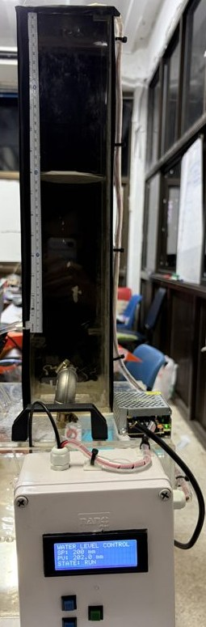
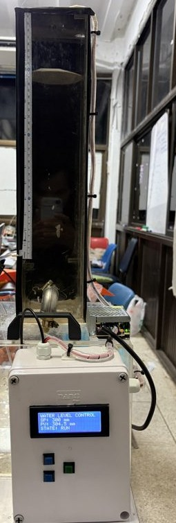
ครอปจากภาพใน PDF ให้เห็นถัง ไม้บรรทัด และจอ · คลิกเพื่อขยาย
สรุปผล
Traceability: Requirement → Test → ผล
| ID | เกณฑ์ | จำลอง (MIL/SIL/PIL) | ถังจริง | ผล |
|---|---|---|---|---|
| R1 | 100–300 mm ทีละ 25 | MIL 18 กรณี | 18 การเปลี่ยน SP (Run14/16) | ผ่าน |
| R2 | Overshoot/Undershoot ≤ 10% | MIL สูงสุด 0.48% | Undershoot PV 9.65% · สเกล 10% (ซ้ำ 7.06% / 8%) | ผ่าน ใกล้ขีดจำกัด |
| R3 | ts ≤ 250 s (±5%) | MIL 181.2 s | 223.6 s (300→100) | ผ่านเกณฑ์ปรับปรุง ไม่ผ่านเกณฑ์เดิม 200 s |
| R4 | ess ≤ 5% | MIL 0.38 mm | สเกล 3 mm (1.71%) | ผ่าน |
| R5 | โค้ดตรงกับโมเดล | SIL 0 · PIL 2.38×10−5 count | – | ผ่าน PIL tol. 0.5 count เสนอหลังได้ผล |
| R6 | ControlCore < Ts | PIL 124 µs (สูงสุดที่วัดได้) | – | ผ่านในกรณีที่ทดสอบ ไม่ใช่ WCET |
| R7 | PWM = 0 เมื่อ Fault | Logic ในโมเดล | LCD แสดงสถานะ Fault | ผ่านบางส่วน |
| R8 | ไม่เชื่อมต่อ PC | – | ยังไม่มีหลักฐานยืนยัน | รอหลักฐาน |
ข้อจำกัดหลักและงานถัดไป
1 · หลักฐาน R7 / R8
มีภาพ LCD แสดงสถานะ และ Logic PWM = 0 ในโมเดล
งานถัดไป: ทดสอบ Fault พร้อมบันทึก PWM output และสถานะปั๊ม · บันทึกวิดีโอ Standalone ตั้งแต่เปิดเครื่อง
2 · การวัดอ้างอิง
PV คือค่าเซนเซอร์หลัง Filter · ค่าสเกลอ่านด้วยตาโดยไม่ได้บันทึกเวลาคู่กับ PV
งานถัดไป: เพิ่มการวัดอ้างอิงที่บันทึกเวลาคู่กับ PV (เช่น ภาพสเกลพร้อม Timestamp)
3 · ช่วงความแม่นของแบบจำลอง
แม่นที่สุดช่วง 125–200 mm · ยังไม่จำลอง Undershoot ที่ 100 mm
งานถัดไป: ปรับแบบจำลองช่วงระดับต่ำด้วยข้อมูลถังจริง แล้ว Cross-validate
นอกขอบเขตงานนี้: การปรับ Ki หรือ Filter เพื่อลด Undershoot และ ts ขาลง ต้องทดสอบใหม่ทั้งชุด — ยังไม่ได้ทำ
ทีมและแผนงาน
การแบ่งหน้าที่หลักของทีม
พัฒนา MATLAB/Simulink ออกแบบและปรับค่าตัวควบคุม PI พัฒนาโปรแกรม Arduino และวิเคราะห์ผลการควบคุม
จัดเตรียมและประกอบชุดถังน้ำ ปั๊มน้ำ เซนเซอร์ และวงจรควบคุม ตรวจสอบการต่อสายและทดสอบอุปกรณ์
รวบรวมข้อมูลและผลการทดลอง จัดทำรายงาน จัดทำสไลด์ และเรียบเรียงเนื้อหานำเสนอ
สมาชิกทุกคนร่วมวางแผน ทดสอบระบบ วิเคราะห์ปัญหา และเตรียมตอบคำถาม
แผนดำเนินงานเบื้องต้น
แผนเบื้องต้น ไม่ใช่บันทึกวันทำงานจริง
การจัดเก็บไฟล์และเวอร์ชัน
ชุดไฟล์โครงงาน
- ชุดส่งมอบ
- WaterLevel_Project_2026-10-31_v1.0.zip
- วันที่จัดชุด
- 31 ตุลาคม 2026
- เวอร์ชันชุดไฟล์
- v1.0
- แบ่งเป็น
- โปรแกรม / ฮาร์ดแวร์ / ผลการทดลอง
ชื่อชุดไฟล์ระบุวันที่และเวอร์ชัน พร้อมรายการไฟล์ต้นทาง
วันที่จัดชุดไม่ใช่วันที่ทำการทดลอง
ดาวน์โหลดชุดไฟล์โครงงานเว็บไซต์นี้
- เวอร์ชันเว็บไซต์
- เว็บไซต์ v1.0 · 1 พฤศจิกายน 2026
- การเผยแพร่
- GitHub Pages
เวอร์ชันเว็บไซต์แยกจากเวอร์ชันชุดไฟล์โครงงาน · เว็บไซต์มีเฉพาะภาพ กราฟ และเอกสารที่ใช้ในหน้านี้ ไม่ได้รวมชุดข้อมูลทั้งหมด